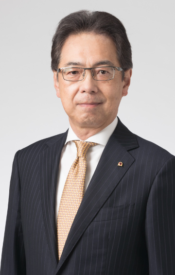

8.24（木）13：00～13：30
DXを活用したアマダの事業戦略と次世代を担う人材育成～「お客さまとともに成長する」アマダのDXソリューション～
アマダ代表取締役会長
磯部 任 氏
金属加工業界における製造現場では、少子高齢化に伴う労働者不足や熟練技能の継承の問題に加え、急速なデジタル技術の発展によるDXへの対応が喫緊の課題となっています。本講演では、アマダのDX戦略の考え方と市場に提供しているDXソリューション、さらには次世代を担う人材育成についてご紹介します。